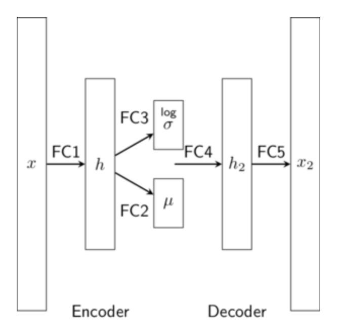

VAE for MNIST Image Classification
In this section, we are going to go through some practical code examples of variational encoding method for MNIST image classification.
import os
import torch
import torch.nn as nn
import torch.nn.functional as F
import torchvision
from torchvision import transforms
from torchvision.utils import save_image
import numpy as np
import matplotlib.pyplot as plt
%matplotlib inline
from sklearn.metrics.cluster import normalized_mutual_info_score
def show(img):
npimg = img.numpy()
plt.imshow(np.transpose(npimg, (1,2,0)), interpolation='nearest')
def plot_reconstruction(model, n=24):
x,_ = next(iter(data_loader))
x = x[:n,:,:,:].to(device)
try:
out, _, _, log_p = model(x.view(-1, image_size))
except:
out, _, _ = model(x.view(-1, image_size))
x_concat = torch.cat([x.view(-1, 1, 28, 28), out.view(-1, 1, 28, 28)], dim=3)
out_grid = torchvision.utils.make_grid(x_concat).cpu().data
show(out_grid)
def plot_generation(model, n=24):
with torch.no_grad():
z = torch.randn(n, z_dim).to(device)
out = model.decode(z).view(-1, 1, 28, 28)
out_grid = torchvision.utils.make_grid(out).cpu()
show(out_grid)
def plot_conditional_generation(model, n=8, fix_number=None):
with torch.no_grad():
matrix = np.zeros((n,n_classes))
matrix[:,0] = 1
if fix_number is None:
final = matrix[:]
for i in range(1,n_classes):
final = np.vstack((final,np.roll(matrix,i)))
#z = torch.randn(8*n_classes, z_dim).to(device)
z = torch.randn(8, z_dim)
z = z.repeat(n_classes,1).to(device)
y_onehot = torch.tensor(final).type(torch.FloatTensor).to(device)
out = model.decode(z,y_onehot).view(-1, 1, 28, 28)
else:
z = torch.randn(n, z_dim).to(device)
y_onehot = torch.tensor(np.roll(matrix, fix_number))
.type(torch.FloatTensor).to(device)
out = model.decode(z,y_onehot).view(-1, 1, 28, 28)
out_grid = torchvision.utils.make_grid(out).cpu()
show(out_grid)# Device configuration
device = torch.device('cuda' if torch.cuda.is_available() else 'cpu')
# Create a directory if not exists
sample_dir = 'samples'
if not os.path.exists(sample_dir):
os.makedirs(sample_dir)data_dir = 'data'
# MNIST dataset
dataset = torchvision.datasets.MNIST(root=data_dir,
train=True,
transform=transforms.ToTensor(),
download=True)
# Data loader
data_loader = torch.utils.data.DataLoader(dataset=dataset,
batch_size=128,
shuffle=True)
test_loader = torch.utils.data.DataLoader(
torchvision.datasets.MNIST(data_dir, train=False, download=True, transform=transforms.ToTensor()),
batch_size=10, shuffle=False)Breakdown of the Math
Consider a latent variable model with a data variable and a latent variable , . Given the data , we want to train the model by maximizing the marginal log-likelihood:
where denotes the empirical distribution of : .
To avoid the (often) difficult computation of the integral above, the idea behind variational methods is to instead maximize a lower bound to the log-likelihood:
Any choice of gives a valid lower bound. Variational autoencoders replace the variational posterior by an inference network that is trained together with to jointly maximize
The variational posterior is also called the encoder and the generative model , the decoder or generator.
The first term is the negative reconstruction error. Indeed under a gaussian assumption i.e. the term reduces to , which is often used in practice. The term can be seen as a regularization term, where the variational posterior should be matched to the prior .
Variational Autoencoders were introduced by Kingma and Welling (2013), see also (Doersch, 2016) for a tutorial.
There are various examples of VAE in PyTorch available here or here. The code below is taken from this last source.

# Hyper-parameters
image_size = 784
h_dim = 400
z_dim = 20
num_epochs = 15
learning_rate = 1e-3
# VAE model
class VAE(nn.Module):
def __init__(self, image_size=784, h_dim=400, z_dim=20):
super(VAE, self).__init__()
self.fc1 = nn.Linear(image_size, h_dim)
self.fc2 = nn.Linear(h_dim, z_dim)
self.fc3 = nn.Linear(h_dim, z_dim)
self.fc4 = nn.Linear(z_dim, h_dim)
self.fc5 = nn.Linear(h_dim, image_size)
def encode(self, x):
h = F.relu(self.fc1(x))
return self.fc2(h), self.fc3(h)
def reparameterize(self, mu, log_var):
std = torch.exp(log_var/2)
eps = torch.randn_like(std)
return mu + eps * std
def decode(self, z):
h = F.relu(self.fc4(z))
return torch.sigmoid(self.fc5(h))
def forward(self, x):
mu, log_var = self.encode(x)
z = self.reparameterize(mu, log_var)
x_reconst = self.decode(z)
return x_reconst, mu, log_var
model = VAE().to(device)
optimizer = torch.optim.Adam(model.parameters(), lr=learning_rate)Here for the loss, instead of MSE for the reconstruction loss, we take Binary Cross-Entropy. The code below is still from the PyTorch tutorial (with minor modifications to avoid warnings!).
# Start training
for epoch in range(num_epochs):
for i, (x, _) in enumerate(data_loader):
# Forward pass
x = x.to(device).view(-1, image_size)
x_reconst, mu, log_var = model(x)
# Compute reconstruction loss and kl divergence
# For KL divergence between Gaussians, see Appendix B in VAE paper or (Doersch, 2016):
# https://arxiv.org/abs/1606.05908
reconst_loss = F.binary_cross_entropy(x_reconst, x, reduction='sum')
kl_div = - 0.5 * torch.sum(1 + log_var - mu.pow(2) - log_var.exp())
# Backprop and optimize
loss = reconst_loss + kl_div
optimizer.zero_grad()
loss.backward()
optimizer.step()
if (i+1) % 10 == 0:
print ("Epoch[{}/{}], Step [{}/{}], Reconst Loss: {:.4f}, KL Div: {:.4f}"
.format(epoch+1, num_epochs, i+1, len(data_loader), reconst_loss.item()/len(x), kl_div.item()/len(x)))Let see how our network reconstructs our last batch. We display pairs of original digits and reconstructed version.
plot_reconstruction(model)Let's see now how our network generates new samples.
plot_generation(model)Not great, but we did not train our network for long... That being said, we have no control of the generated digits. In the rest of this notebook, we explore ways to generates zeroes, ones, twos and so on.
As a by-product, we show how our VAE will allow us to do clustering thanks to the Gumbel VAE described below. But before that, we start by cheating a little bit...
Cheating with the 'conditional' VAE
We will first use the labels here (like what we did in the course with Conditional GAN). The idea is to modify slightly the architecture above by feeding a one hot version of the label to the decoder in addition to the code computed by the decoder.
First code a function transforming a label in its one hot encoding. This function will be used in the training loop (not in the architecture of the neural network!).
n_classes = 10
def l_2_onehot(labels,nb_digits=n_classes):
# take labels (from the dataloader) and return labels onehot-encoded
#
# your code here
#You can test it on a batch.
(x,labels) = next(iter(data_loader))Now modify the architecture of the VAE where the decoder takes as input the random code concatenated with the onehot encoding of the label.
n_classes = 10
class VAE_Cond(nn.Module):
def __init__(self, image_size=784, h_dim=400, z_dim=20, n_classes = 10):
super(VAE_Cond, self).__init__()
self.fc1 = nn.Linear(image_size, h_dim)
self.fc2 = nn.Linear(h_dim, z_dim)
self.fc3 = nn.Linear(h_dim, z_dim)
#
# your code here
#
def encode(self, x):
h = F.relu(self.fc1(x))
return self.fc2(h), self.fc3(h)
def reparameterize(self, mu, log_var):
std = torch.exp(log_var/2)
eps = torch.randn_like(std)
return mu + eps * std
def decode(self, z, l_onehot):
#
# your code here / use torch.cat
#
def forward(self, x, l_onehot):
#
# your code here / use F.gumbel_softmax
#Test your new model on a batch:
model_C = VAE_Cond().to(device)
x = x.to(device).view(-1, image_size)
l_onehot = l_2_onehot(labels)
l_onehot = l_onehot.to(device)
model_C(x, l_onehot)Now you can modify the training loop of your network. The parameter will allow you to scale the KL term in your loss as explained in the -VAE paper see formula (4) in the paper.
def train_C(model, data_loader=data_loader,num_epochs=num_epochs, beta=10., verbose=True):
nmi_scores = []
model.train(True)
for epoch in range(num_epochs):
for i, (x, labels) in enumerate(data_loader):
# Forward pass
x = x.to(device).view(-1, image_size)
#
# your code here
#
reconst_loss = F.binary_cross_entropy(x_reconst, x, reduction='sum')
kl_div = - 0.5 * torch.sum(1 + log_var - mu.pow(2) - log_var.exp())
# Backprop and optimize
loss = reconst_loss + beta*kl_div
optimizer.zero_grad()
loss.backward()
optimizer.step()
if verbose:
if (i+1) % 10 == 0:
print("Epoch[{}/{}], Step [{}/{}], Reconst Loss: {:.4f}, KL Div: {:.4f}"
.format(epoch+1, num_epochs, i+1, len(data_loader), reconst_loss.item()/len(x),
kl_div.item()/len(x)))model_C = VAE_Cond().to(device)
optimizer = torch.optim.Adam(model_C.parameters(), lr=learning_rate)train_C(model_C,num_epochs=15,verbose=True)
plot_conditional_generation(model_C, n=8)Here you should get nice results. Now we will avoid the use of the labels...